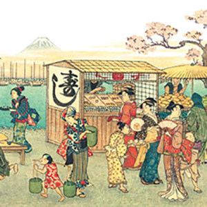
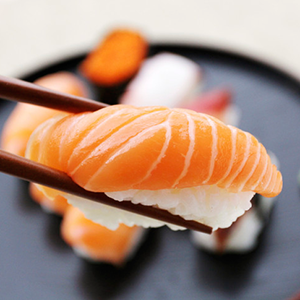

ORIGINS
Sushi is the Japanese preparation and serving of cooked vinegared rice combined with varied ingredients chiefly seafood, vegetables, meat and occasionally tropical fruits. Styles of sushi and its presentation vary widely, but the key ingredient in all cases is the rice. Sushi can be prepared with either brown or white rice. It is often prepared with raw seafood, but some common varieties of sushi use cooked ingredients, and many other sorts are vegetarian. Sushi is often served with pickled ginger, wasabi, and soy sauce. Daikon radish is popular as a garnish.
ETIQUITTE
Unlike sashimi, which is almost always eaten with chopsticks, nigirizushi is traditionally eaten with the fingers, even in formal settings. Although it is commonly served on a small platter with a side dish for dipping, sushi can also be served in a bento, a box with small compartments that hold the various dishes of the meal. Soy sauce is the usual condiment, and sushi is normally served with a small sauce dish, or a compartment in the bento. Traditional etiquette suggests that the sushi is turned over so that only the topping is dipped; this is because the soy sauce is for flavoring the topping, not the rice, and because the rice would absorb too much soy sauce and would fall apart. Toppings that have their own sauce (such as eel) should not be eaten with soy sauce.
NUTRITION
The main ingredients of traditional Japanese sushi, raw fish and rice, are naturally low in fat, high in protein, carbohydrates, vitamins, and minerals. Other vegetables wrapped within the sushi also offer various vitamins and minerals. Many of the seafood ingredients also contain omega-3 fatty acids, which have a variety of health benefits. Some of the ingredients in sushi can present health risks. Large marine apex predators such as tuna can harbor high levels of methylmercury, which can lead to mercury poisoning when consumed in large quantity or when consumed by certain higher-risk groups, including pregnant woman and young children.
